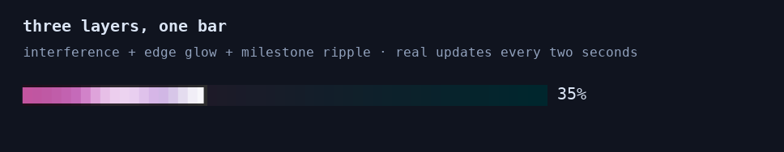
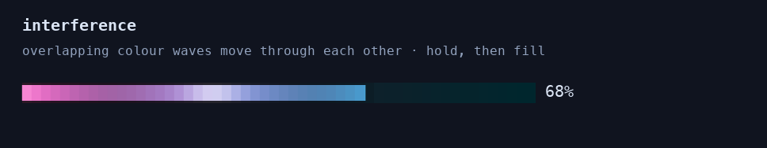
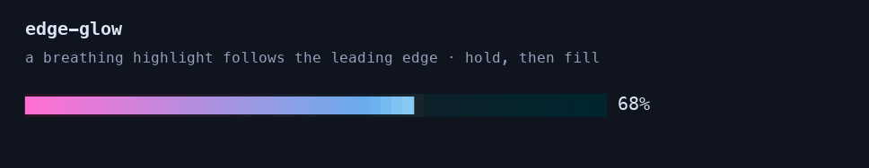
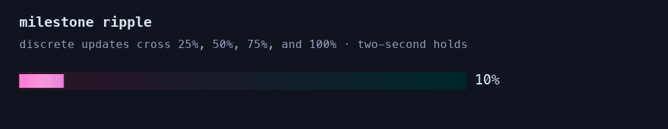

all three together continuous interference and edge glow, with backward ripples after milestones every two seconds.  --style granular --color-mode truecolor --tint-animation interference,edge-glow,milestone-ripple
interference opposing waves move through the fill; progress holds at 68% before advancing.  --style granular --color-mode truecolor --tint-animation interference
edge glow a breathing halo follows the leading edge; progress holds at 68% before advancing.  --style granular --color-mode truecolor --tint-animation edge-glow
milestone ripple discrete progress updates start a backward ripple that fades during each hold.  --style granular --color-mode truecolor --tint-animation milestone-ripple